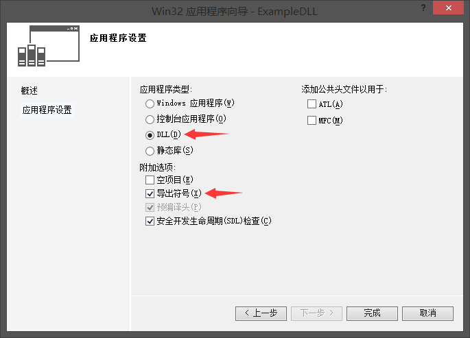

点击 新建项目 -> Win32项目 , 在应用程序向导界面 , 选择 DLL 和 导出符号 , 如下图所示 :

选择 导出符号 , 会自动为我们创建生成DLL的模板 : 创建了导出变量 nMakeDLL , 导出函数 fnMakeDLL , 导出类 CMakeDLL , 如下所示 :
// ExampleDLL.cpp : 定义 DLL 应用程序的导出函数。
//
#include "stdafx.h"
#include "ExampleDLL.h"
// 这是导出变量的一个示例
EXAMPLEDLL_API int nExampleDLL=0;
// 这是导出函数的一个示例。
EXAMPLEDLL_API int fnExampleDLL(void)
{
return 42;
}
// 这是已导出类的构造函数。
// 有关类定义的信息，请参阅 ExampleDLL.h
CExampleDLL::CExampleDLL()
{
return;
}
如果上面没有点击 导出符号 , 将不会生成这些 , 所以为了方便DLL的创建 , 我们最好还是使用导出符号 , 接下来 , 你可以改写上面的类和函数 , 然后生成即可产生 DLL , 如下所示 :
正在创建库 C:\Users\tojohn\Desktop\ExampleDLL\Debug\ExampleDLL.lib
和对象 C:\Users\tojohn\Desktop\ExampleDLL\Debug\ExampleDLL.exp
ExampleDLL.vcxproj -> C:\Users\tojohn\Desktop\ExampleDLL\Debug\ExampleDLL.dll
项目生成了 ExampleDLL.lib , ExampleDLL.dll 两个文件 , 这个在别的项目会用到 ;
dllexport 与 dllimport 的介绍先看下面这段代码 :
#ifdef MAKEDLL_EXPORTS
#define MAKEDLL_API __declspec(dllexport)
#else
#define MAKEDLL_API __declspec(dllimport)
#endif
如果定义了 MAKEDLL_EXPORTS , 然后我们再定义 MAKEDLL_API 为 __declspec(dllexport) , 否则我们定义 __declspec(dllimport) , 前者主要为生成DLL的项目所使用 , 后者为使用DLL的项目所使用 ; dllexport 和 dllimport 存储类特性是 C/C++ 语言的 Microsoft 专用扩展 ; 可以使用它们从 DLL 中导出或向其中导入函数 , 数据和对象 ; 使用这两个特性 , 将会优化导入导出 ;
在创建 DLL 项目时 , MAKEDLL_EXPORTS 是默认定义的 ;
Lib 与 Dll 的使用而在引用 dll 时 , 需要 dll 的 .h , .lib 和 .dll 三个文件 ;
我们在新建项目的 属性 中选择 配置属性 -> C/C++ -> 常规 -> 附加包含目录 , 添加 .h 文件的路径 ;
在 链接器 -> 常规 -> 附加库目录 中添加 .lib 文件的路径 ;
同时还需要添加 .lib 文件的附加依赖项 , 在 链接器 -> 输入 -> 附加依赖项 , 填写 xxx.lib , 或者直接在代码里面引用 #pragma comment(lib, "xxx.lib") ;
然后还需要加载 dll 文件的路径 , 我们直接将 dll 文件放在生成程序文件 .exe 的当前目录下面 ;
最后在程序代码里面使用 DLL 函数 :
// 引入头文件
#include "Include/ExampleDLL.h"
// 引入 Lib 文件 , 在属性设置里面添加了依赖后可忽略
//#pragma comment(lib, "ExampleDLL.lib")
// 使用 DLL 函数
int nDllRst = fnExampleDLL();